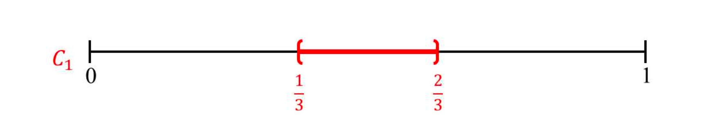
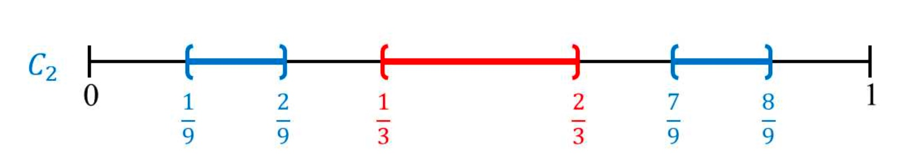

Le tribù di \(\mathbb R\)
Una \(\sigma\)-algebra (o tribù, com'erano chiamate dal gruppo Bourbaki) di \(\mathbb R\) è una famiglia di sottoinsiemi di \(\mathbb R\) chiusa per complementi e unioni numerabili, i cui elementi sono detti misurabili. Ne mettiamo tre a confronto. Se vale l'assioma della scelta alloraAssioma della scelta: data una qualunque famiglia \(\mathfrak F = \{ X_i\}_{i \in I}\) di insiemi non vuoti, esiste una funzione di scelta \( f : \mathfrak F \rightarrow \bigcup_{i \in I} X_i \) tale che \(f(X_i)\in X_i\) per ogni \(i \in I;\)
ovvero data una famiglia di insiemi non vuoti esiste una funzione \(f\), detta funzione di scelta, che associa ad ogni insieme della famiglia un suo elemento - in parole povere, ci è dato scegliere un elemento da ogni insieme della famiglia.
Scopriremo che se non assumiamo l'assioma della scelta allora le seguenti inclusioni in realtà non sono per forza strette.
| $$ \mathscr B (\mathbb R) $$ | $$ \subsetneq $$ | $$ \mathcal L (\mathbb R) $$ | $$ \subsetneq $$ | $$ \mathcal P (\mathbb R) $$ |
|---|
\(\sigma\)-algebra dei boreliani su \(\mathbb R\)
Consiste nella \(\sigma\)-algebra su \(\mathbb R\) generata dai suoi aperti, ovvero la più piccola \(\sigma\)-algebra che contiene tutti gli insiemi aperti di \(\mathbb R\).
Un modo di definirla consiste nel prendere tutte le possibili \(\sigma\)-algebre che contengono gli aperti, e farne l'intersezione. Poichè vale che l'intersezione di \(\sigma\)-algebre è ancora una \(\sigma\)-algebra, la definizione è sensata.
Questa è una definizione "dall'alto" nel senso che si parte da \(\sigma\)-algebre più ampie e se ne ottiene una più piccola tramite intersezione. Ma sarebbe comodo avere anche una definizione "dal basso": a partire dagli insiemi aperti costruire via via tutti gli altri elementi. Questa definizione avrebbe un aspetto simile:
«\(\mathscr B (\mathbb R)\) è definito come la famiglia di sottoinsiemi di \(\mathbb R\) tale che
- Se \(A\) è un aperto di \(\mathbb R\) allora \(A \in \mathscr B (\mathbb R)\).
- Se \(A \in \mathscr B (\mathbb R)\) allora il suo complementare \(A^c \in \mathscr B (\mathbb R).\)
- L'unione arbitraria di elementi di \(\mathscr B (\mathbb R)\) appartiene ancora a \(\mathscr B (\mathbb R)\).
- Ogni elemento di \(\mathscr B (\mathbb R)\) si può ottenere "come combinazione dei punti precedenti".»
Il difficile sta proprio nel formalizzare cosa si intende per "combinazione dei punti precedenti". Possiamo intendere ciò come una successione di operazioni:
- Per questioni che ci toccheranno in seguito, partiamo dall'insieme degli intervalli aperti di \(\mathbb R\) (compresi anche quelli illimitati e l'insieme vuoto). Denotiamo questo insieme \(\mathscr E.\)
- Ora ci aggiungiamo i complementari, definendo \(\mathscr E^c := \{I^c : I \in \mathscr E \}.\) Quello che abbiamo finora lo denotiamo con $$\mathscr F_1 := \mathscr E \cup \mathscr E^c.$$
- A questo punto aggiungiamo l'insieme di ogni possibile unione numerabile degli elementi già ottenuti, ponendo \((\mathscr F_1)^{\sigma} := \left\{ \bigcup_{i=1}^{+\infty}E_i : E_i \in \mathscr F_1 \right\}.\) Prendiamo anche i complementari degli elementi di tale famiglia, ottenendo $$\mathscr F_2 := (\mathscr F_1)^{\sigma} \cup ((\mathscr F_1)^{\sigma})^c$$ (data una generica famiglia \(\mathscr F\), si definiscono \(\mathscr F^c\) e \(\mathscr F^{\sigma}\) in modo analogo a quanto visto prima). Questa è la famiglia formata da tutti gli insiemi aperti e tutti quelli chiusi.
- Andiamo avanti. A partire da questa famiglia ne otteniamo di sempre più grandi tramite unioni numerabili e complementi: all'\(i\)-esimo passaggio abbiamo $$\mathscr F_{i+1} := (\mathscr F_i)^{\sigma} \cup ((\mathscr F_i)^{\sigma})^c.$$
Quando ci fermiamo? Quante volte dobbiamo applicare tale procedimento per ottenere tutto \(\mathscr B(\mathbb R)\)? Forse basta ripetere tali passaggi un numero numerabile di volte: definiamo $$\mathscr B_? (\mathbb R) := \bigcup_{i \in \mathbb N} \mathscr F_i.$$
Purtroppo non basta: questa famiglia non è una \(\sigma\)-algebra, perchè non è chiusa per unione numerabile.
Infatti data una successione di sottoinsiemi \(B_i \in \mathscr B_? (\mathbb R)\), l'unione \(\bigcup_{i=1}^{+\infty} B_i\) non sta per forza in \(\mathscr B_? (\mathbb R)\). Questo è dovuto al fatto che, per definizione, per ogni \( i \) esiste un \(n_i\) tale che \( B_i \in \mathscr F_{n_i}\), e se l'insieme degli \(\{n_i\}\) non è limitato superiormente nulla garantisce che l'unione dei \(B_i\) stia ancora in \(\mathscr B_? (\mathbb R).\)
Ma allora quante volte bisogna ripetere le operazioni delineate sopra? Su quale insieme \(A\) devono variare gli indici se vogliamo che \(\mathscr B (\mathbb R) = \bigcup_{x \in A}\mathscr F_x\)?
La risposta è \(\Omega\), l'insieme degli ordinali numerabili.
Questo è un insieme molto particolare, che noi costruiremo tramite un equivalente dell'assioma della scelta. In poche parole, si può vedere come un'estensione dei numeri naturali nella quale ogni insieme numerabile è limitato superiormente: ma allora non si incorre nel problema di prima, e dunque \(\bigcup_{x \in \Omega}\mathscr F_x\) è una \(\sigma\)-algebra! È anche la più piccola, quindi si tratta proprio di \(\mathscr B (\mathbb R).\) Questo si dimostra tramite induzione, ma attenzione: essendo su \(\Omega\) anzichè su \(\mathbb N\), dovremo utilizzare un processo speciale noto come induzione transfinita.
Partiamo un po' alla lontana.
Dato \(X\) insieme, si definisce ordine totale su \(X\) una relazione \(R\) con proprietà analoghe alla familiare \(\le\):
- se \(x \ R \ y\) e \(y \ R \ z\) allora \(x \ R \ z\)
- se \(x \ R \ y\) e \(y \ R \ x\) allora \(x = y\)
- per ogni \(x \in X, x \ R \ x\)
- se \(x, y \in X\) allora \(x \ R \ y \lor y \ R \ x.\)
In seguito utilizzeremo il simbolo \(\le\) per denotare un ordine totale e scriveremo che \(x < y\) se \(x \le y\) e \(x \neq y\).
Diciamo che \(x \in X\) è l'elemento minimo di \(X\) se \(\forall y \in X, y \ \le \ x \) implica che \( y = x.\)
Dato \(x \in X\) si definisce il segmento iniziale di \(x\) l'insieme \(I_x := \{ y \in \Omega : y < x\}.\)
La relazione \(\le\) si dice buon ordine se oltre ad essere un ordine totale vale una condizione aggiuntiva: ogni sottoinsieme non vuoto di \(X\), preso a sè stante, ha un elemento minimo. Se un insieme \(X\) ammette un buon ordine allora si dice che \(X\) è ben ordinato.
Ad esempio \(\mathbb N\) è ben ordinato tramite la familiare relazione \(\le\): ogni sottoinsieme \(S \neq \emptyset\) di \(\mathbb N\) ha infatti un elemento minimo, un \(n\) tale che \(n \le m\) per ogni \(m \in S\).
Siamo pronti per enunciare un assioma che useremo nella costruzione di \(\Omega\):
Assioma del buon ordinamento: ogni insieme può essere ben ordinato.
Si può dimostrare che questo assioma è equivalente all'assioma della scelta: preso uno dei due si può dimostrare l'altro.Teorema: esiste un insieme ben ordinato non numerabile \(\Omega\) tale che per ogni \(x \in \Omega, \ I_x \) è numerabile.
Dimostrazione. Sia \(X\) un insieme non numerabile. Per l'assioma del buon ordinamento, \(X\) è ben ordinato. Nel caso in cui valga la condizione cercata (rispetto al buon ordine) abbiamo finito. Altrimenti, sia \(S := \{ x \in X : I_x \) non è numerabile \(\}.\) Per il buon ordinamento di \(X,\) tale sottoinsieme ha un elemento minimo \(x_0,\) e possiamo prendere \(\Omega = I_{x_0}.\) \(\ \quad \tiny\blacksquare\)
Si dimostra che tale insieme è unico a meno di "isomorfismi di ordine".Fissiamo un po' di terminologia (come se non l'avessimo fatto fino ad ora):
- L'insieme \(\Omega\) appena trovato è l'insieme degli ordinali numerabili.
- I suoi elementi sono giustamente detti ordinali numerabili.
- Si definisce \(1 := \inf \Omega.\)
- A partire da \(x \in \Omega\) si definisce \(x + 1 := \inf\{y \in \Omega : y > x\}\) (che esiste in virtù del buon ordinamento di \(\Omega\)) come l'ordinale successore di x, mentre \(x\) è l'ordinale predecessore di \(x+1.\)
- Non tutti gli elementi di \(\Omega\) hanno un ordinale predecessore (se no avremmo semplicemente \(\mathbb N\)...): quelli che non ce l'hanno sono detti ordinali limite.
È importante sapere che è possibile costruire \(\Omega\) anche senza fare uso dell'assioma del buon ordinamento, tramite i numeri di Hartogs.
Dato un qualunque insieme ben ordinato \(X\) vale la seguente importante proprietà:
Principio di induzione transfinita: se \(A\) è un sottoinsieme di \(X\) tale che per ogni \(x \in X\) la condizione \(I_x \subseteq A \) implica che anche \(x \in A\), allora \(A = X.\)
Dimostrazione. Se \(X \neq A,\) sia \(x = \text{inf}(X \setminus A).\) Allora \(I_x \subseteq A\) ma \(x \not \in A,\) il che va contro le ipotesi. \( \quad \tiny\blacksquare\)
Ad esempio possiamo utilizzare l'induzione transfinita per provare ciò che avevamo affermato prima: ogni sottoinsieme numerabile \(A \subset \Omega\) è limitato superiormente. Infatti se \(A\) è numerabile allora anche \(J := \bigcup_{x \in A}I_x\) è numerabile (sotto l'assioma della scelta, l'unione numerabile di insiemi numerabili è ancora numerabile; si veda la sezione relativa alla prima inclusione) e quindi non può corrispondere a tutto \(\Omega.\) Sia \(x_0 := \inf(\Omega \setminus J),\) allora \(x_0\) limita superiormente \(A\), perchè se ci fosse \(x \in A\) tale che \(x > x_0\) allora si avrebbe che \(x_0 \in I_x,\) e dunque \(x_0 \in J,\) il che va contro la definizione di \(x_0.\)
Quando viene applicata all'insieme \(\Omega,\) l'induzione transfinita può assumere una forma particolare: in tal caso ogni elemento dell'insieme o è \(1,\) o è l'ordinale precedente di qualche altro elemento o è un ordinale limite. Ma allora per dimostrare una proposizione basta dimostrare che vale nel "caso base" \(1,\) che se vale per \(x\) vale anche per \(x+1\) e che se vale per ogni \(y < x\) con \(x\) ordinale limite allora vale anche per \(x\) stesso.
Aggiorniamo la definizione degli \(\mathscr F_x\) per \(x \in \Omega\):
- \(\mathscr F_1 := \mathscr E \cup \mathscr E^c.\)
- Se \(x\) ha un ordinale predecessore \(y\) allora $$\mathscr F_x := ( \mathscr F_y)^{\sigma} \cup (\mathscr F_y)^{\sigma})^c. $$
- Se \(x\) è un ordinale limite allora $$ \mathscr F_x := \bigcup_{y < x} \mathscr F_y. $$ Vogliamo mostrare che \(\mathscr F := \bigcup_{x \in \Omega} \mathscr F_x\) è la più piccola \(\sigma\)-algebra contenente gli aperti.
Prima di tutto osserviamo che \(\mathscr F\) è una \(\sigma\)-algebra: \(\mathbb R \in \mathscr F_1\), se \(E \in \mathscr F_x\) allora \(E^c \in (\mathscr F_x)^c \subseteq \mathscr F_{x+1}\), e se \(E_i \in \mathscr F\) è una successione numerabile di elementi, allora per ogni \(i\) esiste \(x_i\) tale che \(E_i \in \mathscr F_{x_i}\), ma \(\{ x_i \}\) è un insieme numerabile in \(\Omega\) che quindi è limitato superiormente da un qualche \(y\): ma allora per ogni \(i\) si ha che \(E_i \in \mathscr F_y\) e quindi \(\bigcup_{i=1}^{+\infty} E_i \in (\mathscr F_y)^{\sigma} \subseteq \mathscr F_{y+1}.\)
Resta solo da dimostrare che \(\mathscr F\) è la più piccola \(\sigma\)-algebra contenente gli aperti. Certamente gli aperti sono elementi di \(\mathscr F_2.\) Invece, se una \(\sigma\)-algebra contiene gli aperti allora contiene \(\mathscr F_1;\) se contiene un qualche \(\mathscr F_x\) allora contiene \(\mathscr F_{x+1}\) per definizione di \(\sigma\)-algebra; e se contiene \(\mathscr F_y\) per ogni \(y < x\), certamente contiene pure \(\bigcup_{y < x} \mathscr F_x.\) Allora per induzione transfinita, conterrà tutto \(\mathscr F.\)
Una questione di cardinalità
È facile constatare che ogni insieme misurabile secondo Borel lo è anche secondo Lebesgue (la misura di Lebesgue è il completamento di quella di Borel). Più interessante è mostrare come mai si ha l'inclusione stretta. Potrebbe non venire immediatamente in mente un esempio di insieme misurabile secondo Lebesgue e non secondo Borel, ma la verità è che - in termini di cardinalità - i boreliani sono come un granello di sabbia in mezzo ad un mare di Lebesgue-misurabili.
In termini meno allegorici,
Fissiamo la notazione: denotiamo con \(|A|\) la cardinalità di un qualunque insieme \(A \) (in realtà nella nostra trattazione il concetto di cardinalità di un insieme non ha significato di per sè, ma ha solo senso in rapporto alla cardinalità di altri insiemi) e \( \ \mathfrak c := |\mathbb R|.\) Se esiste una biiezione tra \(A\) e \(B\) allora scriviamo \(|A| = |B|,\) se esiste una iniezione \(|A| \le |B|\) e se esiste una suriezione \(|A| \ge |B|\) \( ( \)si dimostra che \(|A| \le |B| \Leftrightarrow |B| \ge |A|).\) Un insieme \(A\) si dice numerabile se \(|A| \le |\mathbb N|,\) ovvero se esiste una iniezione \(A \to \mathbb N\) o, equivalentemente, se esiste una suriezione \(\mathbb N \to A.\)
Nella seguente dimostrazione viene messa in risalto l'utilità della definizione induttiva di \(\mathscr B (\mathbb R),\) senza la quale l'intero discorso andrebbe fatto molto diversamente.
Prima di tutto dimostriamo che un'unione numerabile di insiemi numerabili è anch'essa numerabile, ovvero che se \(A\) è numerabile e \(X_\alpha\) è numerabile per ogni \(\alpha \in A,\) allora \(\bigcup_{\alpha \in A} X_{\alpha}\) è numerabile. Per ogni \(\alpha \in A \ \) scegliamo una suriezione \( f_{\alpha} : \mathbb N \to X_{\alpha},\) e da queste costruiamo la suriezione \(f : \mathbb N \times A \to \bigcup_{\alpha \in A} X_{\alpha}\) definita come \(f(n, \alpha) := f_{\alpha}(n):\) da questo deduciamo che \(\left| \bigcup_{\alpha \in A} X_{\alpha} \right| \le |\mathbb N \times A|.\)
Ma \(A\) è numerabile, dunque \(|\mathbb N \times A| \le |\mathbb N^2|.\) Infine notiamo che \(\mathbb N^2\) è numerabile: basta prendere come biiezione la funzione coppia di Cantor; quindi in definitiva \(\left| \bigcup_{\alpha \in A} X_{\alpha} \right| \le |\mathbb N|\) e perciò l'unione è numerabile.
In modo del tutto analogo possiamo dimostrare che se \(|A| \le \mathfrak c \ \) e \(\ |X_\alpha| \le \mathfrak c\) per ogni \(\alpha \in A\) allora \(\left| \bigcup_{\alpha \in A} X_{\alpha} \right| \le \mathfrak c;\) l'unico punto delicato è mostrare che
Ma facciamo un passo indietro: quando abbiamo scelto per ogni \(\alpha \in A\) una suriezione, abbiamo implicitamente usato l'assioma della scelta: questo perchè gli \(\alpha\) variano su un insieme infinito, e la scelta della biiezione non è univoca. Queste considerazioni in effetti non valgono senza assumere l'assioma della scelta: senza di esso, l'insieme dei boreliani può risultare "molto più grande" e nulla vieta che coincida con tutto \(\mathcal P (\mathbb R).\)
Poniamo \(f(1) := 1,\) \(f(x+1):=f(x)+1.\) Nel caso che \(x\) sia l'ordinale successore di un qualche \(y\), tale formula ne definisce il valore tramite \(y\). Se invece \(x\) è un ordinale limite dove mandiamo \(x\)? Deve essere un valore che non "crei problemi" riguardo all'iniettività di \(f.\)
Ovviamente \(f(x)\) non può essere uguale a un qualche \(f(y)\) con \(y \in I_x.\) Ma abbiamo che \(\mathbb R \setminus f(I_x)\) non è mai vuoto perchè per definizione di \(\Omega,\) \(I_x\) è numerabile (mentre \(\mathbb R\) è più che numerabile, per il teorema di Cantor).
Possiamo dire allora "mandiamo \(x\) in un punto qualsiasi di \(\mathbb R \setminus f(I_x)\)"? No, perchè ciò non garantisce l'iniettività di \(f:\) potrebbe capitare che magari sia posto \(f(x)=0,\) ma allora si avrebbe che \(f(x+1)=f(x)+1=1=f(1), \) violando l'iniettività.
Per evitare questo problema diciamo invece che mandiamo \(x\) in un punto qualsiasi di \(\mathbb R \setminus f(\bigcup_{y < x}y + \mathbb Z),\) ovvero anzichè escludere i singoli punti \(f(y)\) escludiamo anche tutti i valori della forma \(f(y)+k, k \in \mathbb Z.\)
Cosa ci garantisce che \(\mathbb R \setminus f(\bigcup_{y < x}y + \mathbb Z)\) non sia vuoto? L'unione numerabile di insiemi numerabili è numerabile: abbiamo usato l'assioma della scelta.
Innanzitutto \(\mathscr F_1\) è l'unione degli intervalli aperti e i loro complementi; non è difficile mostrare che l'insieme degli intervalli aperti ha cardinalità \(\mathfrak c\) (è utile usare il fatto che \(|\mathbb R^2|=\mathfrak c\) per quanto detto prima sulla cardinalità del prodotto) e ovviamente quella dei loro complementi anche; quindi \(|\mathscr F_1| = \mathfrak c\) (è per questo che abbiamo scelto come \(\mathscr E\) gli intervalli aperti anzichè gli aperti).
Se \(\mathscr F_x\) ha cardinalità \(\mathfrak c\) allora lo stesso vale per \((\mathscr F_x)^c\) (ovvio) ma anche per \((\mathscr F_x)^{\sigma}.\) Questo perchè dato un qualunque elemento \(E \in (\mathscr F_x)^{\sigma}\) possiamo scegliere una sua espressione del tipo \(\bigcup_{1=1}^{+\infty}E_i\) con \(E_i \in \mathscr F_x\); allora ad \(E\) associamo la successione di numeri reali \((g(E_1), g(E_2), \dots )\) dove \(g\) è una biiezione tra \(\mathscr F_x\) e \(\mathbb R\). Si dimostra che l'insieme delle successione di numeri reali ha la stessa cardinalità dei numeri reali, quindi \(|(\mathscr F_x)^{\sigma}| = \mathfrak c.\)
Da ciò si deduce che se \(|\mathscr F_x| = \mathfrak c \ \) ma allora anche
Infine se \(x\) è un ordinale limite e per ogni \(y < x\) vale che \(|\mathscr F_y| \le \mathfrak c\) allora \(\mathscr F_x = \bigcup_{y < x} \mathscr F_y\) è un'unione numerabile di insiemi con cardinalità \(\mathfrak c,\) e perciò ha anch'esso tale cardinalità.
Usiamo la stessa notazione precedentemente definita, con l'aggiunta che \(2^{\mathfrak c} := |\mathcal P (\mathbb R)|.\)
Per dimostrare che \(|\mathcal L (\mathbb R)| = 2^{\mathfrak c}\) costruiamo l'insieme di Cantor e ne dimostriamo qualche proprietà.
Un esempio rilevante in teoria della misura è l'insieme di Cantor. Esso rappresenta un insieme non numerabile che risulta essere di misura nulla. La costruzione di tale insieme avviene attraverso un numero infinito di passi che eliminano via via un numero sempre più grande di segmenti dall'intervallo \([0,1]\). Iniziamo con lo scrivere i segmenti da rimuovere ad ogni passo; in ogni passaggio verrà diviso il segmento considerato in 3 parti e verrà rimosso il segmento "di mezzo". Ad esempio per il primo passo dividiamo il segmento \([0,1]\) in \(\left[ 0,\frac13 \right],\left( \frac13,\frac23 \right), \left[ \frac23,1 \right] \) e rimuoviamo il segmento \( \left( \frac13,\frac23 \right) \).
Per il secondo passo prendiamo i segmenti rimasti, ovvero \(\left[ 0,\frac13 \right]\) e \(\left[ \frac23,1 \right] \) e applichiamo lo stesso algoritmo
e così via per i restanti segmenti all'infinito. Per sapere quali segmenti è necessario togliere al passo \(k\) osserviamo che in generale ad ogni passo si tolgono sempre segmenti che sono simmetrici rispetto al centro e distano di \(\frac23\), quindi ci basta trovare una formula per i segmenti prima del centro di \([0,1]\) e per gli altri effettuare la traslazione. Osserviamo che i segmenti cercati sono semplicemente i segmenti ottenuti prima rimpiccioliti di \(\frac13\), quindi arriviamo alla formula
Osserviamo che per ogni \(k\in \mathbb{N},\) \(C_k\) è l'unione di \(2^{k-1}\) intervalli chiusi ognuno di lunghezza \(3^{-k}.\)
L'insieme $$\mathcal{C} := [0,1] \setminus \bigcup_{i=1}^{+\infty}C_i$$ ottenuto rimuovendo i \(C_i\) è detto insieme di Cantor.
Teorema 1: sia \(x=0.a_1a_2 \dots \) l'espansione in base 3 di un numero \(x\in[0,1].\) Allora \(x\in\mathcal{C}\) se e solo se \(a_n \in \{0,2\}\) per ogni \(n \in \mathbb{N}.\)
Dimostrazione. In questa dimostrazione faremo uso della conversione di un numero in una base alternativa; per una discussione più approfondita si consiglia di consultare questo sito. Per quello che servirà ai nostri scopi è utile sapere che nella conversione in base 3 la posizione decimale indica in quale "terzo" il numero è contenuto.
Prendiamo come esempio \(0.120\) (già espresso in base 3). La prima cifra decimale ci dice che è contenuto nel primo terzo di \([0,1]\), ovvero \(\left[\frac{1}{3},\frac{2}{3}\right];\) la seconda cifra decimale ci dice che sta nel terzo terzo di \(\left[\frac{1}{3},\frac{2}{3}\right],\) ovvero \(\left[\frac{5}{9},\frac{6}{9}\right]\) e infine l'ultima cifra decimale ci dice che è contenuto nel primo terzo di \(\left[\frac{5}{9},\frac{6}{9}\right],\) ovvero \(\left[\frac{15}{27},\frac{16}{27}\right].\)
Detto ciò, sia \(x\in[0,1]\) e sia \(0.a_1a_2...\) la sua espansione in base 3, ovvero
Questo dimostra il secondo verso della biimplicazione, vediamone adesso il primo verso.
Dalla osservazione fatta precedentemente sulla espansione di un numero in base 3 e dalla costruzione dei \(C_i,\) se \(a_n\in \{0,2\}\) per ogni \(n\in\mathbb{N}\) allora \(x\in\mathcal{C}.\)\(\ \quad \tiny\blacksquare\)
Siamo dunque pronti per dimostrare il seguente importante risultato.
Teorema 2: l'insieme di Cantor \(\mathcal{C}\) non è numerabile, più precisamente \(|\mathcal{C}|=\mathfrak{c}.\)
Dimostrazione. Per la dimostrazione utilizziamo un metodo noto come diagonale di Cantor (che tra l'altro è lo stesso utilizzato nel teorema di Cantor già citato).
Supponiamo che l'insieme di Cantor sia numerabile e dunque \(\mathcal{C}=\{x^1,x^2,x^3,...\}\) (dove quelli in alto non sono esponenti ma indici). Dal teorema precedente, possiamo scrivere l'espansione di ogni \(x_i \in \mathcal{C}\) come \(x^i=0.d_1^id_2^i..., \ \) con \( \ d_j^i \in \{0,2\} \ \forall i,j.\)
Allora ogni elemento di \(\mathcal{C}\) compare nella lista:
L'insieme di Cantor è il complementare di una unione di aperti, dunque è chiuso. Ciò significa che è misurabile (è un boreliano) perciò possiamo calcolarne la misura:
Si ha quindi che \(|\mathcal{C}|=\mathfrak{c}\) e dunque il suo insieme delle parti \(\mathcal{P}(\mathcal{C})\) ha cardinalità \(2^\mathfrak{c}.\) Inoltre \(\mathcal{C}\) è misurabile secondo Lebesgue ed ha misura nulla.
Osserviamo che, siccome la misura di Lebesgue è completa, ogni sottoinsieme dell'insieme di Cantor è misurabile. Otteniamo allora che \(\mathcal{P}(\mathcal{C}) \subset \mathcal{L}(\mathbb{R}) \subset \mathcal{P}(\mathbb{R})\) e dunque \(|\mathcal{L}(\mathbb{R})|=2^\mathfrak{c}.\)
ma allora per il teorema di Cantor, non esiste una corrispondenza biunivoca tra \(\mathscr B (\mathbb R)\) e \(\mathcal L (\mathbb R)\), e certamente non possono essere uguali. Fonti
\(\sigma\)-algebra di Lebesgue su \(\mathbb R\)
Per parlare della \(\sigma\)-algebra di Lebesgue dobbiamo prima definire cos'è la misura esterna di Lebesgue.
Partiamo da un intervallo aperto, \( \ I = (a,b)\): è ragionevole assegnargli come lunghezza \(l(I)\) il valore \(b - a\). Se l'intervallo è limitato diciamo che \(l(I) = +\infty\).
Come facciamo ad assegnare una "lunghezza" (o meglio, una misura) ad un sottoinsieme qualunque \(A \subseteq \mathbb R\)? Possiamo provare a decomporre \(A\) come unione disgiunta di intervalli aperti, e poi sommare le loro lunghezze; ma non è sempre possibile fare una simile decomposizione.
Ciò che invece possiamo fare è considerare tutti i modi in cui un'unione numerabile di intervalli aperti possono "coprire" \(A\), e per ognuno di questi modi vedere qual è la somma delle lunghezze degli intervalli. L'estremo inferiore di tutte queste possibilità è proprio la misura esterna di Lebesgue:
L'unico problema è che la misura esterna... non è una misura: non rispetta la \(\sigma\)-additività. Allora introduciamo finalmente la \(\sigma\)-algebra di Lebesgue, una famiglia di sottoinsiemi di \(\mathbb R\) scelta apposta in modo che, ristretta a tali insiemi, la misura esterna di Lebesgue sia \(\sigma\)-additiva. Il criterio che un sottoinsieme \(A \subseteq \mathbb R\) deve soddisfare per essere misurabile secondo Lebesgue \( ( \)ovvero che \(A \in \mathcal L (\mathbb R) ) \) è il seguente:
Ristretta alla \(\sigma\)-algebra di Lebesgue \(m_1^*\) è quindi una misura, detta semplicemente misura di Lebesgue e denotata con \(m_1\), da cui otteniamo lo spazio di misura di Lebesgue \( (\mathbb R, \mathcal L (\mathbb R), m_1) \).
Un'importante proprietà della misura di Lebesgue è che è completa, ovvero ogni sottoinsieme di un insieme di misura nulla è misurabile e ha misura nulla. In effetti un altro modo di definire lo spazio di misura di Lebesgue è come il completamento dello spazio di misura di Borel, ovvero aggiungendo alla \(\sigma\)-algebra \(\mathscr B (\mathbb R) \) tutti i sottoinsiemi degli insiemi di misura nulla e dando ad essi misura nulla.
L'insieme di Vitali
La definizione di \(\sigma\)-algebra di Lebesgue è piuttosto robusta, e include una classe di insiemi talmente ampia che non è affatto facile dedurre l'esistenza di un insieme non misurabile secondo Lebesgue. In effetti si è trattato di un problema interessante per i matematici del '900, risolto con successo nel 1905 dal matematico italiano Giuseppe Vitali.
L'esempio di sottoinsieme di \(\mathbb R\) non misurabile secondo Lebesgue porta il nome del suo primo scopritore ed è dunque detto insieme di Vitali.
Sull'intervallo \([0,1]\) consideriamo la seguente relazione di equivalenza: $$ x \ \rho \ y \iff x-y \in \mathbb{Q}. $$ Possiamo allora considerare l'insieme di tutte le classi di equivalenza indotte dalla relazione appena definita. Osserviamo che ogni classe contiene un'infinità numerabile di elementi; inoltre queste devono essere una infinità non numerabile, poiché se fossero un'infinità numerabile avremmo che l'insieme \([0,1]\) stesso sarebbe numerabile (in quanto unione numerabile di insiemi numerabili).
Per l'assioma della scelta esiste un insieme che contiene esattamente un rappresentante di ogni classe di equivalenza: chiamiamo tale insieme V. L'insieme così costruito è l'insieme di Vitali.
Osserviamo infine che V è quindi un sottoinsieme non numerabile di \([0,1]\).
Consideriamo \(\mathbb{Q} \cap [-1,1]\).
Sia \(\{q_n\}\) una numerazione degli elementi di \(\mathbb{Q} \cap [-1,1]\) e definiamo \(V_n=V+q_n \subseteq [-1,2]\).
Notiamo che:
Dimostriamolo per assurdo: sia \( x\in V_n \cap V_m \). Allora si ha:
Sia \(x \in [0,1]\), allora esiste \(y \in V\) tale che \(x-y=q \in \mathbb{Q}\), da cui ricaviamo che \( x=y+q=y+q_n \) per un certo \(n\). Quindi abbiamo appena mostrato che \(x \in V_n\) per un certo \(n\), perciò vale la prima inclusione.
La seconda inclusione segue dalla definizione dei \(V_n\).
Dalle precedenti osservazioni otteniamo i seguenti fatti:
- Da \((2)\), per monotonia della misura:
$$ 1 = m_1([0,1]) \leq m_1\left(\bigcup_{n=1}^{+\infty} V_n\right) \leq m_1([-1,2]) = 3 $$
- Da \((1)\), per le proprietà di \(\sigma\)-additività e invarianza per traslazioni della misura di Lebesgue:
$$ \begin{align} m_1 \left( \bigcup_{n=1}^{+\infty} V_n\right) &= \sum_{n=1}^{+\infty}m_1(V_n) \\ &= \sum_{n=1}^{+\infty}m_1(V) = \begin{cases} 0 & m_1(V)=0 \\ +\infty & m_1(V)>0\\ \end{cases} \end{align} $$
In conclusione, se \(V\) fosse misurabile secondo Lebesgue, anche i suoi traslati \(V_n\) sarebbero misurabili ed avrebbero la stessa misura di \(V\) per quanto appena visto, ma ciò è in contraddizione con il fatto che la misura di \(\bigcup_{n=1}^{+\infty} V_n\) è compresa fra 1 e 3. Pertanto \(V\) non può essere misurabile.
Nella costruzione dell'insieme di Vitali abbiamo dovuto fare ricorso all'assioma della scelta.
Potrebbe sembrare piuttosto innocuo, e in effetti la maggior parte dei matematici implicitamente accettano tale assioma senza problemi. Ma assumerlo porta anche a conseguenze inaspettate (come il famoso paradosso di Banach-Tarski, il quale tra l'altro sfrutta proprio l'esistenza di insiemi non Lebesgue-misurabili) perciò - dal punto di vista logico - quando se ne fa uso è sempre bene sottolinearlo.
Ma allora anzichè l'insieme di Vitali, non potremmo trovare un altro esempio che non preveda l'assioma della scelta?
In realtà no: è stato dimostrare che ogni sottoinsieme non misurabile secondo Lebesgue si può costruire solo facendo uso dell'assioma.
In effetti nel 1970 in un paper Robert Solovay costruì un modello della teoria degli insiemi di Zermelo-Fraenkel senza assumere l'assioma della scelta dove tutti gli insiemi di numeri reali sono misurabili secondo Lebesgue.